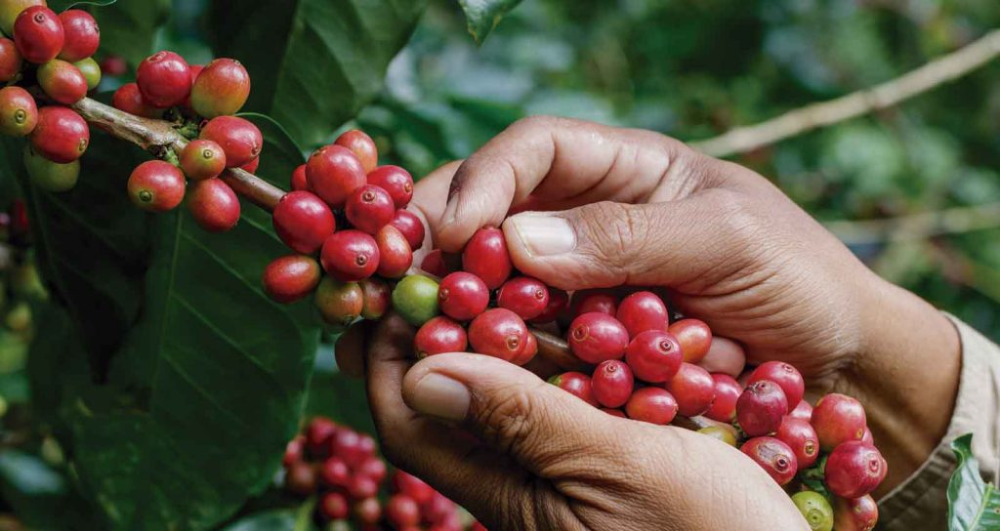
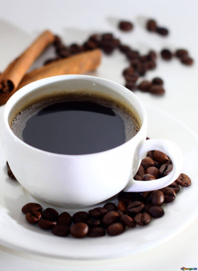
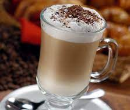

HOME

La historia del café se remonta al siglo XIII, aunque el origen del café sigue sin esclarecerse. Se cree que los ancestros etíopes del actual pueblo oromo fueron los primeros en descubrir y reconocer el efecto energizante de los granos de la planta del café;1 sin embargo, no se ha hallado evidencia directa que indique en qué parte de África crecía o qué nativos lo habrían usado como un estimulante o incluso conocieran su existencia antes del siglo XVII.1 La historia de Kaldi, un criador de cabras etíope del siglo IX que habría descubierto el café, no apareció escrita hasta 1671 y es probablemente apócrifa.2 Se cree que, desde Etiopía, el café fue propagado a Egipto y Yemen.3 La evidencia creíble más temprana de cualquier bebida de café o conocimiento del árbol del café aparece a mediados del siglo XV, en los monasterios sufi de Yemen.1 Fue allí, en Arabia, donde los granos de café fueron tostados y molidos por primera vez en una forma similar a como son preparados en la actualidad. Para el siglo XVI, se había expandido por el resto del Medio Oriente, Persia, Turquía y África del Norte. Luego, el café se extendió a Italia y el resto de Europa hasta Indonesia y el continente americano.4 La palabra "café" proviene del término turco kahve, a su vez, procedente del árabe, qahwa, a través del italiano.5 El término árabe sería una abreviación de la expresión qahhwat al-bun o planta de café. Un posible origen de la palabra se encontraría en el Reino de Kaffa en Etiopía, de donde procedería la planta del café; su nombre allí es bunn o bunna.
es la mezcla de agua caliente y café procesado en un máquina de Expreso. Se cree que fue creado en el año que E.U.A invadió Italia, ya que los soldados americanos no soportaban lo intenso del café italiano (hecho en una máquina de Expreso y que se le agrega agua caliente después de procesar el expreso). Entonces los soldados americanos le pedían que se le echara agua antes de procesarlo; entonces los baristas italianos antes de procesarlo le echaban agua caliente a la taza y luego procesaban el expreso, así al juntarlo el café se les hacía más digerible, tras ello los baristas italianos lo llamaron Americano en son de burla. Actualmente es confundido con el café solo (que es todo el café hecho en métodos de café, Chemex, Melita, V-60, French Press, Aero Press, Kalita, remojo apagado o hervido, etc.
El capuchino (del italiano cappuccino) es una bebida nacida en Italia, preparada con café expreso y leche montada con vapor para darle cremosidad. Un capuchino se compone de 125 ml de leche y 25 ml de café expreso, en ocasiones se agrega cacao en polvo o canela según el gusto del consumidor. La característica del capuchino la da el café expreso la textura y temperatura de la leche, ya que esta no debe pasar de los 65 °C. La técnica del barista para dar volumen a la leche es introduciendo, por medio de vapor a presión, minúsculas burbujas de aire que le otorgan una textura cremosa.
El café con leche es una de las bebidas más comunes que incluyen café. Consta básicamente de dos ingredientes: café (como infusión) y leche, con una proporción que varía de acuerdo a las costumbres locales, pero ronda la mezcla por partes iguales[cita requerida]. Generalmente, el término café con leche lleva implícito también el tamaño de la taza que se usa, la cual suele ser grande, entre 200 y 250 ml (esta taza en algunos países es llamada también de desayuno). A la mezcla de café y leche en un recipiente de tamaño un poco más pequeño se la denomina cortado (aunque además del tamaño también cambia la proporción de los constituyentes). La preparación del café con leche no está limitada al empleo de un solo tipo de café, si bien tanto el café expreso como el de filtro son los más tradicionales. Desde la invención del café soluble es muy común que este sea utilizado como sustitución. La mayoría de las personas prefieren tomar esta bebida caliente, pero hay quienes gustan tomarla fría. Suele formar parte del desayuno en muchos países.